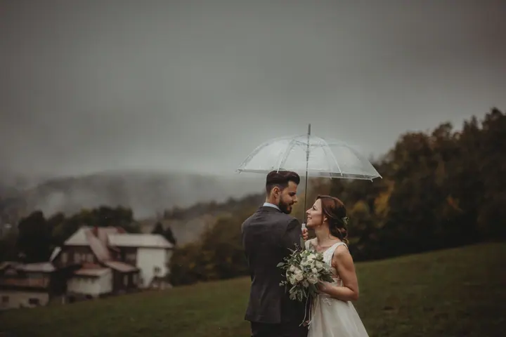
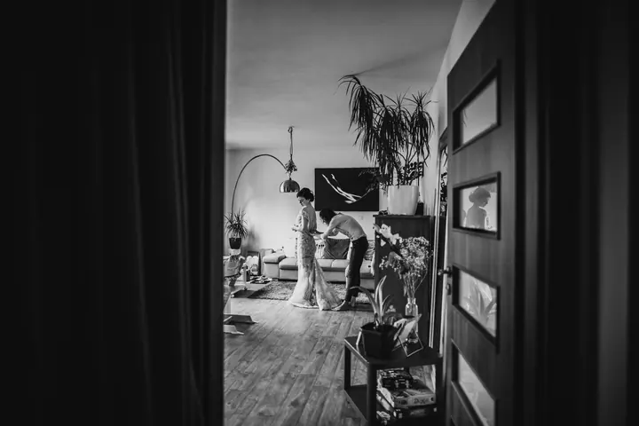
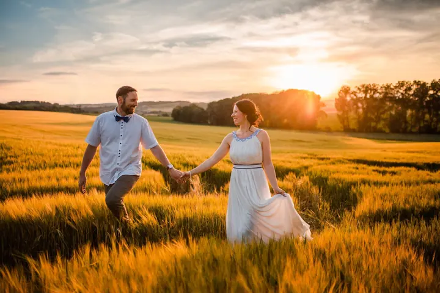

jedna
Svatby
Nafotím vám památku na svatební den, který si díky fotkám můžete prožívat znovu a znovu. Ke svatbě připravuji i slideshow z celého dne.

Svatební a newborn fotografka · Zlín, Zlínský kraj

Jmenuji se Simona Bláhová a jsem fotografka ze Zlína. Fotím svatby, vaše novorozené uzlíčky štěstí i těhotenská bříška. Mám radši přirozené a veselé záběry než strojené pózy.
Více o mně
Co fotím
jedna
Nafotím vám památku na svatební den, který si díky fotkám můžete prožívat znovu a znovu. Ke svatbě připravuji i slideshow z celého dne.
dvě
Fotím vaše novorozené uzlíčky štěstí ve svém newborn ateliéru ve Zlíně. Kromě klasického focení nabízím i natur newborn.
tři
Vaše těhotenské bříško nafotím v ateliéru, nebo venku v přírodě. Vyberte si, co je vám bližší.
Rád s vámi strávím příjemný podvečer při focení vaší rodiny v exteriéru. Nafotím i první narozeniny vašeho batolátka.

Přirozeně, vesele a téměř bez retuše.


Za objektivem
Fotografie jsou moje vášeň a od roku 2012 i práce na plný úvazek. Ve Zlíně mám vlastní ateliér, kde vznikají hlavně fotky miminek a těhotenských bříšek. Za rodinami, páry a na svatby vyrážím po celém Zlínském kraji.
Preferuji přirozené a veselé záběry, ne série snímků s těžkou a křečovitou stylizací, která vás brzy přestane bavit. Proto své fotky téměř neretušuji. Chci vás zachytit takové, jací ve skutečnosti jste.
Ráda se dělím o to, co umím. Kolegům a kolegyním, kteří chtějí fotit miminka, nabízím jednodenní individuální newborn kurz. Tak, dost bylo řečí, pojďme se spolu pustit do tvoření vaší vzpomínky.
Simona
Napište mi nebo zavolejte, o jaké focení máte zájem a kdy byste ho chtěli. Ověřím, jestli mám termín volný.
Probereme, co od focení čekáte, jestli budeme v ateliéru, nebo venku, a na co se připravit. U svatby si projdeme program dne.
Fotím přirozeně a bez křečovité stylizace. Vy si užíváte svůj den nebo chvíli s rodinou, já se starám o fotky.
Fotky vyberu a upravím jen jemně, protože téměř neretušuji. Ke svatbám připravuji i slideshow z celého dne.
Portfolio
Fotografie jsou ilustrační
Otázky
Ateliér mám ve Zlíně, tam fotím hlavně miminka a těhotenská bříška. Rodiny, páry a svatby fotím venku, nejčastěji ve Zlínském kraji.
Téměř vůbec. Chci, abyste se na fotkách poznali a vypadali takoví, jací opravdu jste.
Ano. Celé svatební příběhy najdete na mém blogu a ke svatbám připravuji slideshow ze všech fotek.
Ano, nabízím jednodenní individuální newborn kurz formou face to face pro všechny, kdo se chtějí naučit fotit miminka.

Napište pár vět o tom, co si představujete. · +420 776 355 280